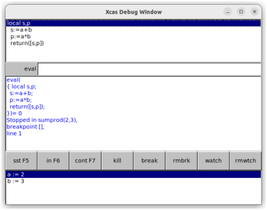

25.6.1 Starting the debugger
The debug
command starts the Xcas debugger.
-
debug takes
fn(arg), a function and its argument.
- debug(fn(arg))
brings up a debug window which contains a pane with the program with
the current line highlighted, an eval entry box,
a pane with the program including the breakpoints, a row of buttons,
and a pane keeping track of the values of variables.
By default, the
value of all variables in the program are in this pane. The buttons
are shortcuts for entering commands in the eval box, but you
can enter other commands in the eval box to change the values
of variables or to run a command in the context of the program.
Example
With the sumprod program:
| sumprod(a,b):={
local s,p;
s:=a+b;
p:=a*b;
return [s,p];
} |
input:
which opens the debug window shown in Figure 25.2.

| Figure 25.2: The debug window in Xcas |
It has the following buttons:
-
sst runs the
sst
command, which takes no arguments and runs the
highlighted line in the program before moving to the next line.
- in runs the
sst_in
command, which takes no argument and runs one step in
the program or a user defined function used in the program.
- cont runs the
cont command,
which takes no arguments and runs the commands
from the highlighted line to a breakpoint.
- kill runs the
kill command,
which exits the debugger.
- break puts the command
breakpoint
in the eval box, with default arguments
of the current program and the current line. It sets a breakpoint at
the given line of the given program. Alternatively, if you click on a
line in the program in the top pane, you will get the
breakpoint command with that program and the line you clicked
on.
You can set a breakpoint when you write a program with the
halt command.
A halt() line in the program will bring up the debugger
during runtime. If you want to
debug the program, though, it is still better to use the debug
command. Also, you should remove any halt commands when you
are done debugging.
- rmbrk puts the command
rmbreakpoint
in the eval box, with default
arguments of the current program and the current line. It removes a
breakpoint at the given line of the given program. Alternatively, you
can click on the line in the program in the top pane with the bookmark
you want to remove.
- watch puts the command
watch
in the eval box, without the arguments filled
in. It takes a list of variables as arguments, and will keep track of
the values of these variables in the variable pane.
- rmwtch puts the
command rmwatch
in the eval box
without the arguments filled in. The arguments are the variables you
want to remove from the watch list.